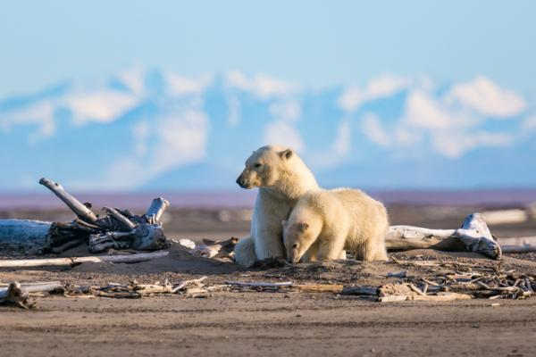
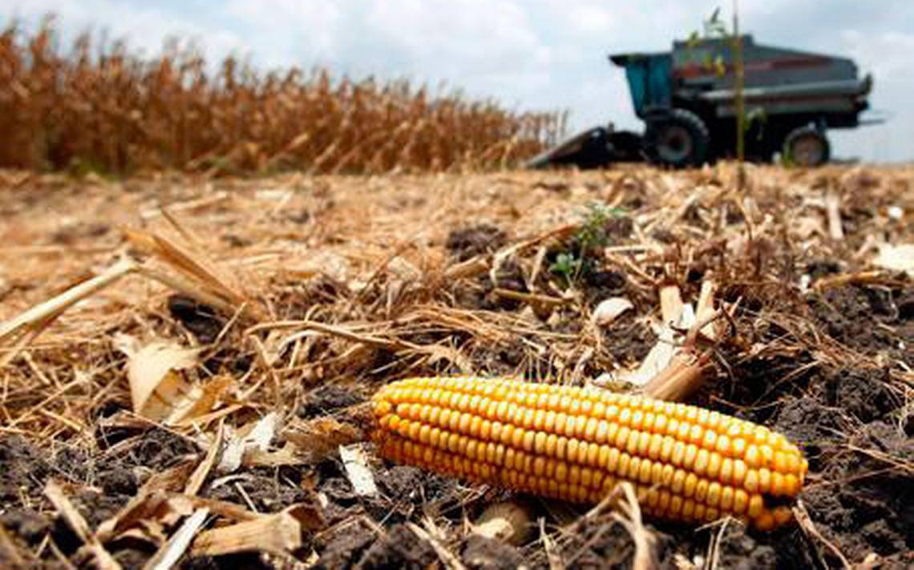

¿Qué es el cambio climático?
El cambio climático es la modificación de la temperatura y del resto de variables del clima, que se está produciendo con una velocidad e intensidad sin precedentes en la historia de la humanidad, como consecuencia de la actividad humana.
¿Por qué es importante darle importancia?
El cambio climático puede afectar a nuestra salud, a la capacidad de cultivar alimentos, a la vivienda, a la seguridad y al trabajo. Condiciones como el aumento del nivel del mar y la intrusión de agua salada han avanzado hasta el punto de que comunidades enteras han tenido que reubicarse, y las prolongadas sequías están creando un riesgo de hambruna.
Causas del cambio climático
Electric_BoltLa generación de energía
La generación de electricidad y calor a través de los combustibles fósiles provoca una gran cantidad de emisiones globales. La mayoría de la electricidad se genera todavía con la combustión de carbón o gas, lo que produce dióxido de carbono y óxido nitroso, que son potentes gases de efecto invernadero que cubren el planeta y atrapan el calor proveniente del sol.
.jpg)
FactoryProductos de fabricación
La industria y las fábricas producen emisiones, en su mayoría provenientes de la quema de combustibles fósiles destinada a generar energía para la fabricación de cemento, hierro, acero, componentes electrónicos, ropa y otros bienes.
La maquinaria utilizada en los procesos de fabricación a menudo realizados mediante carbón, petróleo o gas, y con algunos materiales, como los plásticos, están compuestos de sustancias químicas derivadas de los combustibles fósiles.

ForestLa tala de los bosques
La tala de bosques a fin de crear granjas o pastos, o por otros motivos, provoca emisiones dado que cuando se talan sus árboles se libera el carbono que estos han estado almacenando. Cada año se destruyen aproximadamente 12 millones de hectáreas de bosques. Puesto que los bosques absorben el dióxido de carbono, su destrucción también limita la capacidad de la naturaleza para mantener estas emisiones fuera de la atmósfera.

Flight_TakeoffEl uso del transporte
La mayoría de camiones, barcos y aeronaves funcionan con combustibles fósiles. Esto hace que el transporte sea uno de los sectores que más contribuyen a generar gases de efecto invernadero, especialmente en lo que a emisiones de dióxido de carbono se refiere. Los vehículos terrestres son responsables de la mayor parte, debido a la combustión de productos derivados del petróleo, como la gasolina, en los motores de combustión interna.
.jpg)
Food_BankLa producción de alimentos
La producción de alimentos provoca emisiones de metano, dióxido de carbono y otros gases de efecto invernadero, de diferentes maneras, en lo que se incluye la deforestación y la roturación de tierras para la agricultura y el pastoreo, la alimentación del ganado bovino y ovino, la producción y uso de fertilizantes y el abono utilizado para los cultivos, además del uso de la energía que hace funcionar el equipo de las granjas o los barcos pesqueros, siendo normalmente con combustibles fósiles.

StorefrontUn consumo excesivo
Su hogar, el uso que hace de la energía, el modo de desplazarse, lo que come, lo que derrocha, todo ello afecta a la emisión de gases de efecto invernadero. Y lo mismo ocurre con el consumo de bienes como la ropa, los componentes electrónicos y los productos fabricados en plástico. Un gran porcentaje de las emisiones de gases de efecto invernadero están ligadas a los hogares particulares. Nuestro estilo de vida tiene un profundo impacto en el planeta.

Consecuencias del cambio climático
Mood_BadLas principales consecuencias son:
- Elevación de las temperaturas
- Tormentas más potentes
- Aumento de las sequías
- Aumento del nivel del océano y calentamiento del agua
- Desaparición de especies
- Escasez de alimentos
- Más riesgos para la salud
- Pobreza y desplazamiento


.jpg)
.jpg)



.jpg)
Los siete años transcurridos desde 2015 son los más cálidos de los que se tienen datos. La década de 2011 a 2020 fue la más cálida jamás registrada.
Los más ricos son los que tienen mayor responsabilidad: el 1 por ciento de la población mundial con mayor riqueza, en conjunto genera más emisiones de gases de efecto invernadero que el 50 por ciento más pobre.
lorep ipsum
Inicio